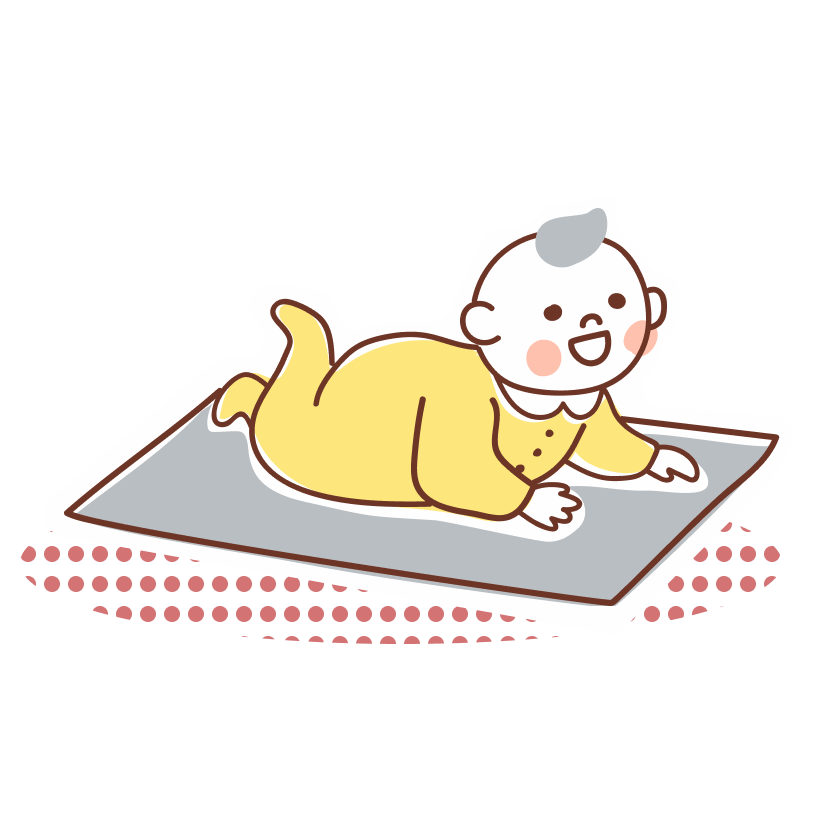
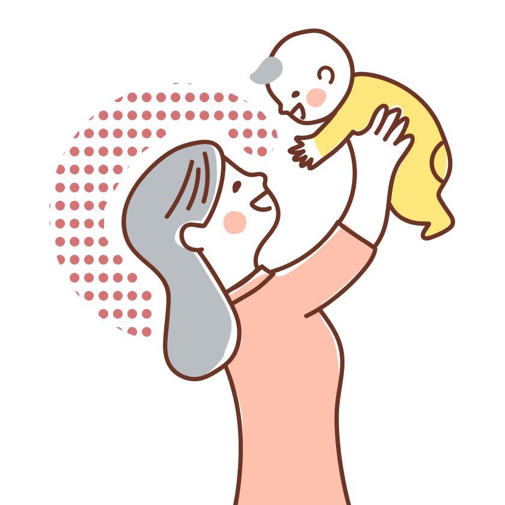
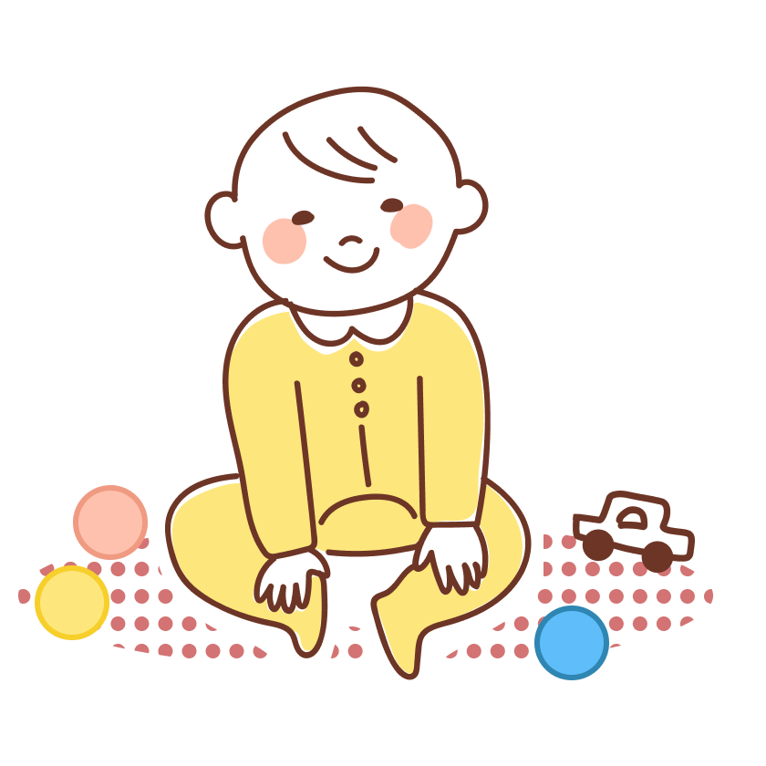
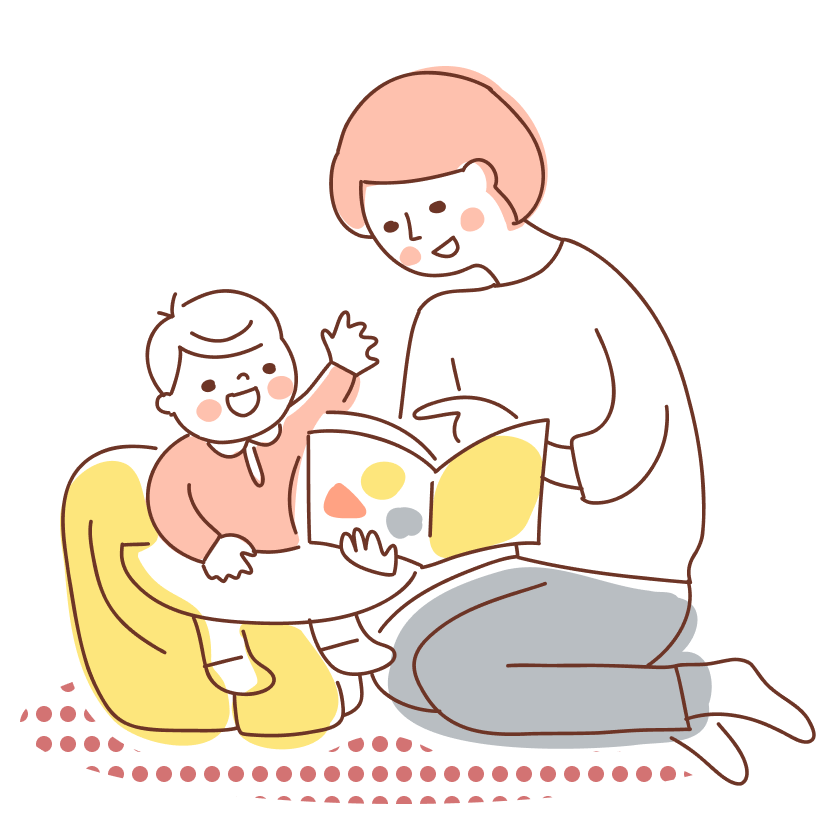
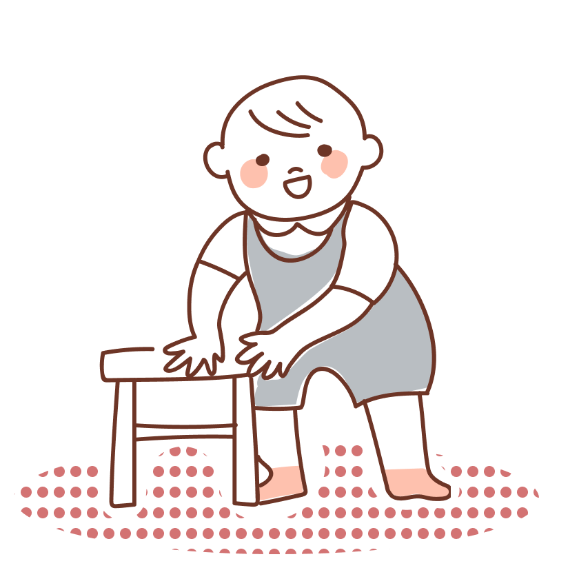
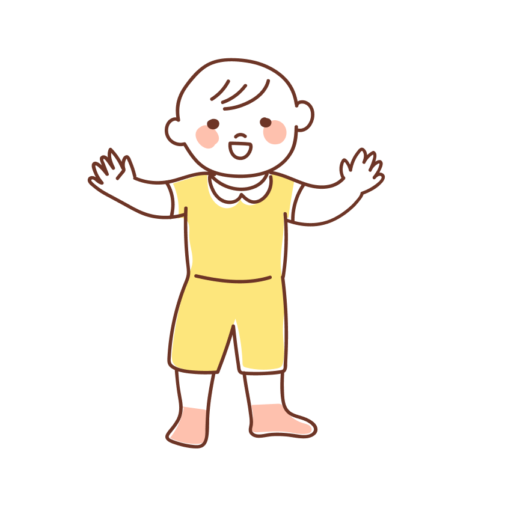
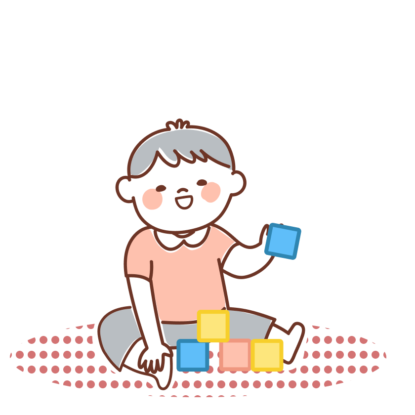
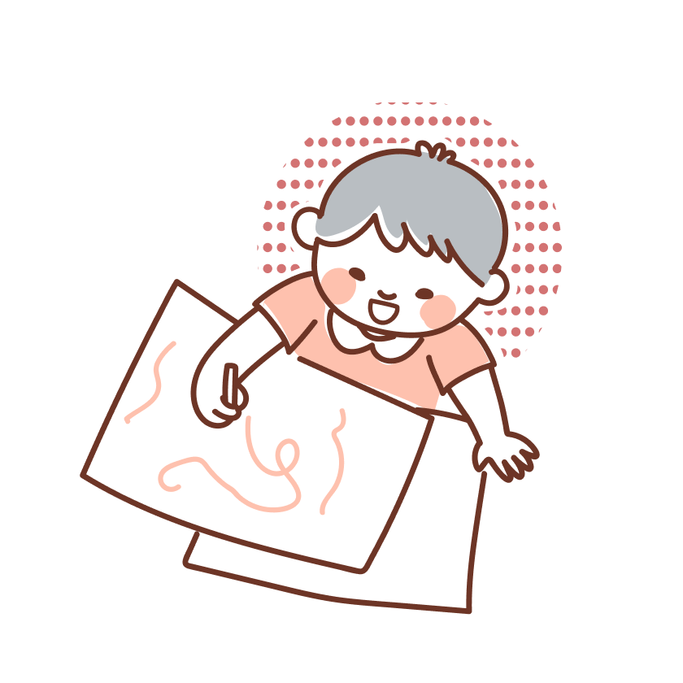
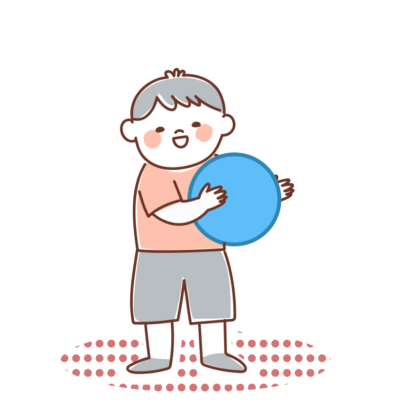

根據世界衛生組織（WHO）統計，兒童發展遲緩約佔 6 ～ 8 ％，而3 歲前是大腦快速發展的黃金期，若能及早發現並接受療育，多數孩子便能追上同齡進度。
每個孩子都是獨特的生命起點，蘊藏著無限的發展潛能。發展遲緩的原因複雜多元，許多情況是源於後天環境刺激不足。只要能及早接受專家建議，調整生活模式與親子互動方式，就能為孩子帶來顯著的改善與轉機。
2 歲半的妮妮不會自己拿湯匙吃飯，精細動作明顯落後同齡孩子，媽媽困惑地問醫師：「她已經可以自己吃飯了嗎？」這樣的場景，在兒科門診並不陌生。
0～3 歲是大腦發展的黃金關鍵期，儘早發現、及早介入，是孩子跨越發展挑戰的最佳方法。

很多不是先天障礙，而是後天互動不足造成，例如生活經驗不足，或家長引導方式不對等，通常只要家長稍做調整，比如多增加親子互動或共讀，孩子就能回到正常軌道上。

0~3歲孩子的大腦正在施工中，像建立神經突觸連結及髓鞘化，就是兩大重要的基礎建設。給孩子最好的成長禮物，不是優渥的環境，而是父母高品質的對話與陪伴。互動，正是形塑孩子大腦神經與語言發展的關鍵力量。

幼兒最好的學習場域是家庭，3 歲以前是孩童語言快速發展的黃金期，即「詞彙爆發期」，孩子開始懂得大量詞彙，並能說單詞表達，進步到能夠語句對答，而家庭是最自然，且能經常練習說話的地方。

0 ～ 3 歲是孩子生命裡最神奇的三年，這 3 年奠定了語言、動作、認知與情緒發展，需要陪他一起走過。

高齡、少子是當前不得不面臨的境況，面對少子化，陪伴孩子不僅是個人的事，更是對未來社會最好的投資。
本表參照國內最常用的兒童發展量表＊，並請專家增修審訂，藉此提醒家長，如果孩子到了該年齡仍未發展出以下關鍵行為，就要多注意囉！建議可諮詢相關醫療人員。












強化手指與手腕的穩定度、手部力量與肌耐力
適合月齡：2∼3歲
建立語言理解、專注力、閱讀興趣與語彙連結，促進互動與表達
適合月齡：0歲開始
促進情緒表達、社交互動與自我修復，透過角色扮演，學習理解他人感受與處理內在情緒
適合月齡：2歲開始
培養語言理解、分類概念、專注力與情緒調節能力。透過日常小任務，建立責任感與掌握感
適用年齡：約1歲半以上